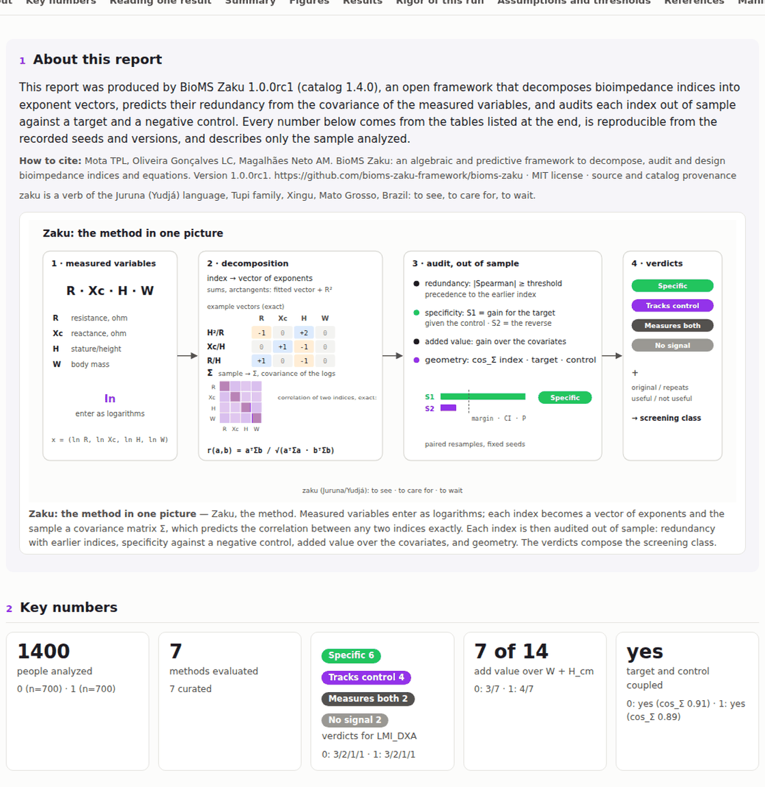
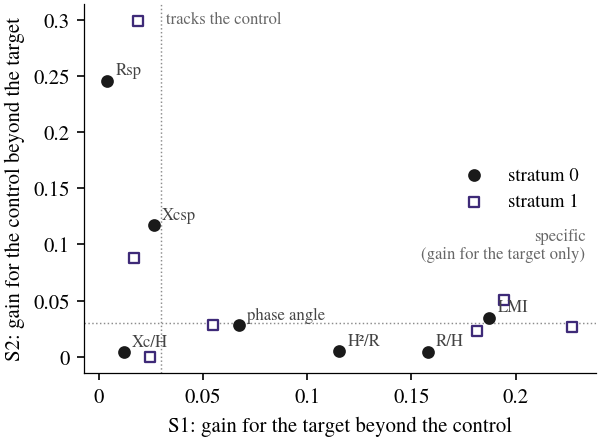
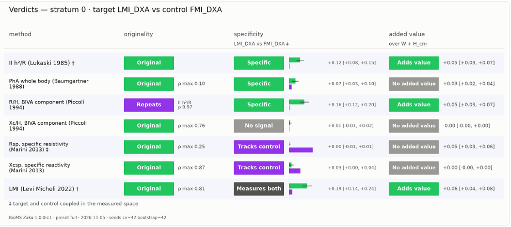

BioMS Zaku: algebraic decomposition and out-of-sample audit of indices and predictive equations
Thalles Paul Leandro Mota
Abstract. Bioimpedance devices measure how the body resists a small electrical current, and researchers turn those readings into indices meant to track lean mass, fat or body water. The trouble is that almost every index grows with body size, so it correlates with every tissue and looks good on paper. BioMS Zaku is open-source software I lead, built to check these indices before anyone relies on them. Before computing anything, it can tell whether a “new” index is an old one in disguise. Then it tests, on data the index has not seen, whether it says something about the target, such as lean mass, that it does not also say about a tissue it should not track, such as fat. On the package's example, its predictions missed the observed correlations by at most 0.015, it caught two published indices that are almost the same measurement (ρ = 0.97), and it separated the indices that follow lean mass from the ones that follow fat.
My role: lead creator and developer. Tools: Python · NumPy · pandas · SciPy · scikit-learn · matplotlib. Code: open (MIT license) on GitHub.
1. Why I built it
I have always been drawn to bioimpedance, and the field has a standardization problem: methods, equipment and indices multiply, and they are compared in ways that are hard to repeat. I built BioMS Zaku to give the field a common, documented way to record indices and equations and to analyze them with rigor, so that modeling with bioimpedance data starts from a solid base. It is a public library, still in development. The name comes from Juruna (Yudjá), a language of the Xingu in Mato Grosso, where zaku means to see, to care for, to wait.
The problem it attacks is simple to state. An index that correlates with lean mass proves little, because larger people have more of every tissue. Before accepting an index, three questions should be answered: is it new, or does it already exist under another name? Does it measure what it claims, or just body size? Does it add anything to stature and body mass?

2. How it works
Most of these indices are the measured variables, resistance, reactance, height and weight, multiplied together, each raised to some power. Zaku writes every index as that list of powers. With it, and with the way the variables vary together in the data, the software predicts how strongly two indices will correlate before either one is computed, which shows at once whether a “new” index is an old one in disguise.
Then comes the audit. The researcher names a target, such as lean mass, and a negative control, something the index should not track, such as fat mass. On the same out-of-sample resamples, the software measures two gains: how much the index adds to predicting the target beyond the control (S1), and how much it adds to predicting the control beyond the target (S2). A specific index shows the first gain and not the second.
It is also built to be checked by someone else. It runs from a guided terminal or a notebook without any programming, writes a single HTML report in Portuguese, English, Spanish or Italian, and keeps its assumptions in five written contracts. It records seeds, versions and a SHA-256 fingerprint of every table, and it never outputs data about individual people, so it can run inside a partner's environment.
3. What the example shows
On the package's example, a synthetic dataset of 1,400 people generated from NHANES parameters, the predicted correlations missed the observed ones by at most 0.015 across 42 pairs. It flagged the BIVA component R/H as redundant with the much older impedance index H²/R (ρ = 0.97): two names for nearly the same measurement. With fat mass as the negative control, three of the seven curated indices were specific to lean mass. Specific resistivity went the other way: it added almost nothing for lean mass (S1 of 0.004) and a lot for fat (S2 of 0.245), so it follows fat mass.

The software is also honest about its own limits. It warned that this contrast is weak by design, because target and control come from the same scan, and its sensitivity check showed that 5 of the 14 verdicts change somewhere on the grid of thresholds. The report says so next to each verdict.

4. What this means in practice
Before adopting or publishing an index, check whether it repeats one already published, whether it measures the target beyond a negative control, and whether it adds anything to stature and body mass. In partnerships with sensitive data, the analysis can run in the partner's environment, since no output contains individual data. And anyone reviewing a paper or an equation can rerun the numbers from the recorded configuration and seeds.
5. Limitations
The demonstration uses synthetic data generated from NHANES 1999–2004 parameters; the verdicts describe the example, not a real population. The software is at its first release candidate (1.0.0rc1). The figures and screens on this page come from the public version of the code (commit 41fc62e).
Lead creator and developer: T. P. L. Mota, with contributions from L. C. Oliveira Gonçalves and A. M. de Magalhães Neto.